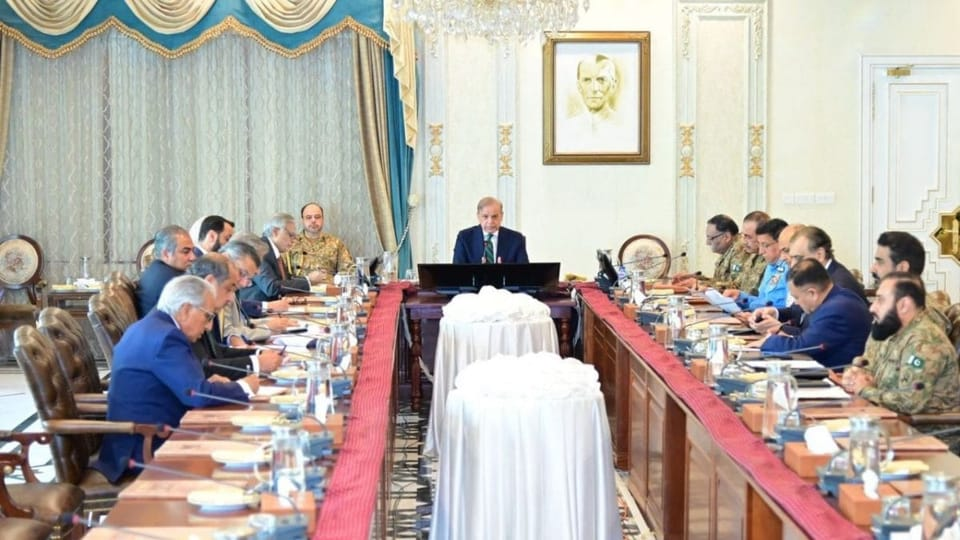

世界苦茶04月24日新闻 | 44条 | 浙江金华再发汽车撞人事件

浙江金华再发汽车撞人事件 | 印巴关系因为恐袭急剧升温 | 乌克兰拒绝割让克里米亚美国调停破裂 | 俄罗斯大规模恐袭基辅造成12人死亡 | 欧盟对Meta和苹果开出罚单 | 美国进行国务院改革
透明茶室
苦茶数据
美元兑人民币：7.29（昨日7.30，前日7.31）
美元兑日元：142.63（昨日142.21，前日140.43）
上证指数：3297（昨日3301，前日3299）
标普500指数：5459（昨日5287，前日5158）
比特币：93522（昨日93177，前日88283）
布伦特原油：66.03（昨日67.98，前日66.94）
中国新闻
• 金华小学门口冲撞 ：中国浙江省金华市一所小学门口据报有车辆冲撞人群，但官方尚未证实事件，伤亡人数不明。综合香港01和《南华早报》报道，这场事故发生在浙江省金华市苏孟乡中心小学，时间是星期二傍晚5时45分。网络流传的现场视频显示，一辆悬挂金华本地车牌的银色私家车冲撞人群后，停在学校门口。画面中多名成人和背着书包的小学生倒地不起，路边的花坛也被撞翻。
• 日政要递信访华 ：日本执政联盟领袖之一的公明党魁齐藤铁夫，星期三在北京与中国全国政协主席王沪宁会谈时，转交了日本首相石破茂致中国国家主席习近平的亲笔信。据日本共同社报道，齐藤铁夫在会谈中说，“必须把重要的日中关系传给下一代”。他也打算在会谈上要求中国撤销因福岛第一核电站处理水排海而采取的日本水产品进口限制，以及恢复进口日本产牛肉。此外，如何应对美国总统特朗普的关税措施，也有可能成为会谈上的议题。
• 王毅将访哈与巴西 ：中国外交部长王毅将从星期五起前往哈萨克斯坦和巴西进行访问，并出席会议。中国外交部发言人星期三宣布，王毅将于4月25日至30日出席在哈萨克斯坦举行的中国一中亚外长第六次会晤并举行第二次中哈外长战略对话。王毅也将在此期间出席在巴西分别举行的金砖国家外长会晤和第十五次金砖国家安全事务高级代表会议。
• 董明珠拒用海归 ：格力电器董事长董明珠称，格力绝不用海归，因为“里面有间谍”。据上观新闻报道，格力电器星期二召开临时股东大会，董明珠当选新一届董事。当天晚间，格力电器发布公告称，董事会会议同意选举董明珠为公司第十三届董事会董事长。在临时股东大会上，董明珠谈到格力用人问题，她称公司“绝不用一个海归派，这海归派里面有间谍，我不知道谁是谁不是。”
• 中国围棋拒战LG杯 ：今年1月的LG杯世界围棋棋王战决赛出现争议判罚事件，中国围棋协会称，将不组队参加5月开幕的新一届LG杯世界围棋棋王赛。据新华社报道，中国围棋协会相关负责人星期三说，协会将不组队参加预计5月开幕的新一届LG杯世界围棋棋王赛，但这不会影响中国棋手参加其他今年和未来由韩国主办的其他世界围棋赛事。在今年1月举行的第29届LG杯世界围棋棋王战三番棋决赛决胜局中，中国棋手柯洁继第二局之后，再次因为未将提子放进棋盒盖遭韩方判定违规，且裁判中断比赛时机具有争议，柯洁不接受判罚结果，选择放弃比赛，韩方宣布韩国棋手卞相壹获得冠军。
• 特称将对华更友好 ：美国总统特朗普说，他计划在任何贸易谈判中都对中国“非常友好”，甚至“大幅降低”中国关税，这表明在市场动荡之际，特朗普可能正在放弃对华强硬立场。彭博社报道，特朗普星期二在华盛顿表示，如果美国和中国能够达成一项协议，“关税会大幅下降，但不会降为零。”特朗普认为没有必要“强硬”对待中国国家主席习近平，他还说，与习近平会谈时，他不会提冠病疫情，因为冠病在北京是一个非常敏感的政治课题。
• 北京桥体起火坍塌 ：中国北京一座大桥星期三发生火情，导致部分桥体坍塌。官方通报称，目前已封路，未出现人员伤亡，事故原因正在调查中。综合上游新闻和《扬子晚报》报道，北京市顺义区一座大桥发生大火，部分桥体出现坍塌。网传视频显示，现场浓烟滚滚，大桥中部桥面发生明显断裂，桥体落入河中，现场交通受阻。北京市交通委员会官方微博发布通报称，顺义区潮白河大桥在星期三早晨发生火情，部分桥体受损。目前，明火已扑灭，事故未造成人员伤亡和车辆受损，事故原因正在调查中。
• 中马延长免签 ：马来西亚与中国同意延长互免签证安排五年，并将两国公民的免签停留期限延长至90天。马国内政部长赛夫丁星期二出席内政部常月集会后告诉媒体，马中两国同意将现有的免签安排延长五年，期满后可选择再延长五年。赛夫丁说：“这意味着中国游客可在无需签证的情况下，在马来西亚停留最多90天，中国也将给予马来西亚游客相同待遇。”
• 习近平表示，无论国际形势如何变化，中国积极应对气候变化的行动不会放缓 ：中国国家主席习近平表示，无论国际形势如何变化，中国积极应对气候变化的行动不会放缓，促进国际合作的努力不会减弱。新华社援引他向气候和公正转型领导人视频峰会发表的致辞并称，要坚守多边主义，锚定绿色低碳发展，通过多边治理共同应对气候危机。
亚太印太新闻
• 日相将访菲 ：日本首相石破茂将于4月29日至30日访问菲律宾。综合路透社和法新社报道，菲律宾总统办公室星期三在一份声明中说，石破茂与菲律宾总统小马可斯在本月底的会晤，将重点关注深化和改善两国经济与发展合作，以及加强政治和防务合作。美国总统特朗普向世界各国发起关税战，无论敌友都未能幸免，中国更是美国关税大棒的首要目标。日本正寻求与区内国家加强关系，而中国国家主席习近平4月14日至18日访问了越南、马来西亚和柬埔寨，试图把北京定位为美国的稳定替代者。
• 台忧斩首威胁 ：台湾涉大陆间谍案频传，引起对总统和副总统的安全担忧，国安局副局长黄明昭称，大陆可能以“内应”的方式发起“斩首行动”，正副元首身边特勤每半年就要做忠诚查核，有异常就会调离并进一步调查。综合TVBS和《太报》报道，台湾立法院外交国防委员会星期三邀请国防部、外交部、国安局、总统府秘书长、国安会议秘书长，报告“近期台军、外交部、总统府、国安会遭共谍渗透，其影响国安层面、范围及未来人员考核管制之具体作法”，并备质询。国民党立委黄仁质询时指出，特勤人员是正副元首的贴身侍卫，能准确掌握正副元首行踪习性，是大陆积极吸收的对象，而大陆武力犯台的手段其中之一就是“斩首行动”，包括对正副元首绑架或击杀，以瘫痪指挥系统、瓦解组织运作等，可打击士气。
• 台中市长吁轻政治 ：台中市长卢秀燕表态，将于星期六在凯道举行集会上挺身而出，旨在提醒执政当局眼前应该放下政治，全力拼经济。国民党主席朱立伦号召群众星期六到总统府前的凯达格兰大道“战独裁”，抗议司法不公。综合台湾《联合报》和ETtoday新闻云报道，卢秀燕星期三受访时就此事说，当中部上千家厂商、30多个工业区企业代表聚集在一起，为的是化解台湾经济重大风暴危机，“这是国难”，并希望执政当局能“轻政治、重经济、重民生，顾人民顾百姓”。
• 美韩核应对演训 ：美国陆军负责应对核武器和大规模杀伤性武器的部门，首次在韩国进行核攻击应对教育训练。据驻韩美军星期三消息，美国陆军核武器和打击大规模杀伤性武器局4月15日至16日在韩军战略司令部，协同韩军和驻韩美军进行了应对敌军核攻击的教育训练，具体内容和形式未对外公开。但据悉，教育训练涉及在敌军使用核武或存在类似风险的环境下遂行作战任务所需知识和技术。USANCA所属核运用咨询集团的两名教练、韩军战略司令部、国防部、韩美联合军司令部相关人士参与。韩美双方还就韩军在“核力量与常规战力一体化”作战中的角色进行了讨论。
• 巴基斯坦警告印度暂停水协议等同“战争行为”，双边关系全面崩溃： 巴基斯坦政府周四警告印度称，后者单方面暂停具有里程碑意义的《印度河水协议》将被视为“战争行为”。这一表态来自巴基斯坦总理办公室，背景是印度在恐袭后对巴基斯坦采取的一系列外交措施，令这两个拥有核武器的邻国关系急剧恶化。印度外交部也在周四强烈建议印度公民避免前往巴基斯坦，并呼吁已经在巴的印度公民尽早离境。与此同时，印度撤销了在印巴基斯坦公民的签证。这一连串激烈举措，源于日前一起震惊南亚的恐怖袭击事件——在喜马拉雅山区风景名胜地帕哈甘发生的袭击，目标多为游客，已造成至少26人死亡、17人受伤。
• 巴基斯坦关闭领空，暂停《西姆拉协定》，回应印度的惩罚性行动： 在4月22日印度查谟和克什米尔邦帕哈甘地区发生造成26人死亡的恐怖袭击事件之后，印度采取了惩罚性措施。对此，巴基斯坦宣布了一系列回应措施。以下是伊斯兰堡在4月24日针对所谓“印度鲁莽且不负责任行为”所作出的宣布：巴基斯坦宣布暂停《西姆拉协定》及所有与印度签署的双边协议。巴基斯坦立即关闭瓦嘎边境口岸。此前，印度已于4月23日宣布关闭该口岸。巴基斯坦也宣布暂停对印度公民的所有南亚区域合作联盟签证，仅对锡克教宗教朝圣者例外。这一做法也与印度前一天的措施相呼应。伊斯兰堡宣布将印度国防、海军及空军武官列为“不受欢迎人物”，并要求他们于2025年4月30日前离境；同时还将印度驻巴高级专员公署人员削减至30人。印度此前一天也采取了类似举措。巴基斯坦立即关闭本国领空，禁止所有由印度拥有或运营的飞机通行。 （翻评：《西姆拉协定》就是印巴的克什米尔停火协议。）
科技新闻
• 华邮与OpenAI合作 ：华盛顿邮报今日宣布与OpenAI建立战略合作伙伴关系，旨在使高质量新闻在ChatGPT中更易于获取。作为合作的一部分，ChatGPT将在回答相关问题时显示《华盛顿邮报》原始报道的摘要、引述和链接。此次合作体现了双方共同的承诺，即让可靠、真实的信息更容易被找到和互动，尤其是在复杂或快速发展的话题上，像华盛顿邮报这样及时、来源可靠的报道至关重要。ChatGPT 将重点展示华盛顿邮报在政治、全球事务、商业、技术等领域的新闻报道，并始终提供明确的来源和完整文章的直接链接，以便用户能够在更深入的背景信息中探索相关话题。
• IG创始人指控Meta ：Instagram 联合创始人凯文·西斯特罗姆在作证时指责马克·扎克伯格压制了这款照片分享应用，这一证词为美国联邦贸易委员会在一场可能导致Meta公司被拆分的垄断审判中提供了支持。西斯特罗姆周二向华盛顿联邦法院表示，Meta 公司在2012年以10亿美元收购 IG 后，未能提供足够的资源来实现 IG 的增长潜力。这些指控直击反垄断机构提起诉讼的核心，指控Meta公司通过收购新兴竞争对手 IG，在一定程度上建立并维持了垄断地位。西斯特罗姆表示，扎克伯格认为 IG 影响了Facebook的增长，这一观点是扎克伯格在2018年决定切断Meta在收购后最初为 IG 提供以帮助其发展的多项工具的主要推动力。
• AI胜病毒学家 ：一项新研究表明， AI 大模型在湿实验室中解决问题方面，如今的表现甚至超过了大部分病毒学家。超智能 AI 模型可以帮助研究人员预防传染病的传播，但非专业人士也可能利用这些模型制造致命的生物武器。这项研究由人工智能安全中心、麻省理工学院媒体实验室、巴西大学 UFABC 和疫情预防非营利组织 SecureBio 的研究人员共同完成。研究作者设计了一项极其困难的实践测试，以衡量测试者解决复杂实验室程序和方案的能力。博士级病毒学家在其专业领域的平均得分为 22.1%，而 OpenAI o3 准确率则达到了 43.8%。谷歌Gemini 2.5 Pro 得分为 37.6%。
• 降压治疗可防痴呆 ：中国研究人员发现，高血压患者降压治疗可降低痴呆发病风险15％，为高血压防治及痴呆疾病预防提供了高质量循证医学证据。中国医科大学附属第一医院孙英贤教授团队联合赵传胜教授研究团队星期一在国际医学期刊《自然·医学》上发表研究成果。由于目前针对痴呆尚无有效治疗措施，因此只能通过控制高血压等危险因素来预防痴呆发生。此前，高血压引发痴呆的证据多来源于流行病学观察性研究，缺乏高质量证据支撑，因此降压治疗是否可降低痴呆发生风险一直存在争议。
• 欧盟委员会4月23日认定苹果公司和Meta公司违反《数字市场法案》，分别处以5亿欧元和2亿欧元罚款： 声明说，苹果公司在其应用商店中限制应用开发者引导用户使用第三方渠道，剥夺了用户获取替代优惠服务的权利。苹果公司未能证明相关限制具有必要性，欧盟要求其立即解除相关限制，并不得再采取具有类似效果的做法。Meta公司2023年在欧盟地区推出“同意或付费”模式，要求其旗下Facebook和Instagram用户要么同意将个人数据整合用于接收个性化广告，要么支付月费以使用无广告版本服务。欧盟认为这一模式不符合相关法律要求，因此作出处罚决定。若苹果和Meta公司未在60天内落实整改，可能面临进一步罚款。此次处罚为欧盟《数字市场法案》生效以来首次作出的非合规认定。
财经新闻
• 美拟大降对华关税 ：《华尔街日报》星期三报道，据知情人士透露，特朗普政府正在考虑大幅削减对中国进口商品征收的高额关税，有些情况下降幅甚至可能超过五成，以缓解与北京之间的紧张关系。一名白宫官员说，对中国进口商品征收的关税可能会降至先前的约50%至65%。知情人士说，特朗普尚未做出最终决定，谈判仍在进行中，目前有几种方案可供选择。
• 投资公司退出中港 ：知情人士透露，Permira Holdings Ltd.正在调整其亚洲战略，将关闭香港和上海的办事处，并将高级管理层调往印度。据彭博社报道，知情人士称，这家总部位于伦敦的投资公司将在未来18个月逐步关闭这些办事处。相关调整将影响不到10名从业人员，其中大多数可能会调往其他办公室。董事总经理、印度区负责人Siddarth Narayan将于今年晚些时候出任亚洲区负责人。
• 中美芬太尼谈判僵局 ：四名知情的美国官员告诉路透社，在贸易站和互加关税之后，中国和美国仍在就应对芬太尼泛滥问题进行谈判，但美国谈判代表声称中方诚意不足。路透社报道，中美两国正在交换有关贩毒分子的情报，并保持密切沟通。但知情人士说，北京方面迄今为止提出的帮助解决危机的方案尚不充分，这考验着特朗普的耐心。自重返白宫以来，特朗普将阿片类药物危机列为其外交政策的首要重点之一。官员说，最近几周，特朗普政府与中方官员进行了直接会谈。
• 韩国严查中国产品伪装成韩国产出口美国： 韩国关税厅21日宣布，把原产地伪装成韩国进行出口的外国产品急增。向美国出口的中国产品占大部分，据分析这是为了规避特朗普关税影响而绕道韩国出口。为了与美国进行关税谈判，韩国关税厅成立了加强打击伪装出口的特别小组。韩国关税厅报告，1至3月查处的伪装成韩国产品的出口商品的金额已达到295亿韩元。出口目的地97%是美国。韩国关税厅举例提到中国产床垫，还发现了将充电电池正极材料从中国运到韩国，更换包装后标为韩国产品的情况。此外，还查处了很多将监控摄像头零部件进口到韩国组装后标为韩国产品出口的案例。
• 比亚迪整顿欧业务 ：中国电动车巨头比亚迪据报在欧洲业务上出现多项战略失误，包括未能招募足够经销商、缺乏熟悉当地市场的高管，以及在对纯电动车接受度较低的市场未能推出混合动力车型，因此公司正在全面整顿其欧洲业务。路透社星期三引述六名比亚迪现任与前任高管透露上述消息。上述高管说，比亚迪已迅速采取行动弥补这些早期失误，大幅扩展其经销网络，并以高薪从斯特兰蒂斯等欧洲车企，挖角本地高管。
• 中方回应美谈关税 ：针对美国总统特朗普表态同中方谈判时不会采取强硬态度，不排除大幅下调对华关税，中国外交部说，如果美方真想通过对话谈判解决问题，就应该停止威胁讹诈，“打，奉陪到底；谈，大门敞开”。特朗普星期二说，他计划在任何贸易谈判中都对中国“非常友好”，如果美国和中国能够达成一项协议，“关税会大幅下降，但不会降为零。”白宫新闻秘书莱维特同日谈到美中达成谈判协议的可能性时，称“进展顺利”。中国外交部发言人郭嘉昆星期三在例行记者会上说，中方早就指出，关税战、贸易战没有赢家，保护主义没有出路，脱钩断链只会孤立自己。对于美国发动的关税战，中方的态度很明确，“我们不愿打，也不怕打。打，奉陪到底；谈，大门敞开。”
• 人民币结算创新高 ：外汇市场对美元信用产生疑虑之际，人民币正受到包括资本项下对外证券投资等项目的推动，刷新在中国跨境收付款中占比的历史纪录。中国国家外汇管理局星期二晚公布的数据显示，3月份以人民币发生的跨境收款和付款分别高达约2.7万亿人民币和2.5万亿元，双双创下历史新高。按折合的美元计算，人民币在全币种跨境收付款总额中的比重超过了2023年8月创下的高峰，达到54.3%。
• 马斯克谈稀土限制 ：美国电动车巨头特斯拉首席执行官马斯克说，该公司“擎天柱”人形机器人的生产受到了中国稀土出口管制的影响。据路透社报道，马斯克星期二在财报电话会议上说，中国希望保证其稀土磁铁不被用于军事目的。特斯拉正在与北京方面合作，以获得使用稀土磁铁的出口许可证。马斯克此前预计，特斯拉今年将生产数千台“擎天柱”机器人。
• 小米否认推迟新车 ：针对有报道指中国科技公司小米将推迟推出首款SUV车型YU7，公司回应称，该车型的上市时间并未变，仍定于6月至7月。路透社星期三引述知情人士报道，小米将不会在原定的6月或7月开始销售首款运动型多用途车车型YU7，新的上市日期尚未确定。此外，小米也取消原定本周在上海车展上亮相YU7的安排，只展出了小米SU7 Ultra和SU7。
• 美将与34国谈关税 ：美国白宫说，美国本周将与34个国家进行关税谈判，并表示目前已收到18个贸易提案。英国广播公司报道，美国白宫新闻秘书莱维特在星期二的新闻发布会表示，美国正在考虑18个贸易协议提案。她还提到了副总统万斯的印度之行，美印贸易协议谈判为美国的优先议程。当被问及中国正向美国的贸易盟友施展影响力以及潜在的报复行动时，她说，主动与特朗普政府接触的国家数量之多已“不言而喻”。
• 美联储褐皮书显示，特朗普宣布关税后美国多地物价上涨，经济活动放缓 ：美联储发布的褐皮书显示，美国部分地区物价正在上涨，经济活动已开始放缓，企业和家庭努力适应美国总统特朗普旨在重塑全球贸易的反复无常的大规模关税。褐皮书捕捉到了特朗普政策的早期影响，人们在进口关税上调前争相购买汽车。不过随着企业在一些人所说的混乱环境中努力跟上变化的步伐，并避免大规模投资，经济活动有所减少。一些地区报告称，价格正在快速变化或即将大幅上涨，并暗示即将出现裁员。
• 美国4月商业活动受关税影响降至16个月来最低，商品和服务价格飙升 ：标普全球的调查显示，美国4月商业活动放缓至16个月来的最低水平，而商品和服务的价格在关税导致的不确定性下大幅攀升，加剧了金融市场对滞胀的担忧，这可能会让美联储陷入困境。调查还显示，特朗普不断变化的贸易政策已将美国的平均有效关税税率提高到一个多世纪以来的最高水平，而打击移民的严厉措施正在损害包括旅游业在内的出口。美国4月综合PMI产出指数跌至51.2，为2023年12月以来最低，3月时为53.5。
• Switch 2 日本申购用户达220万人 远超预期： 任天堂社长古川俊太郎23日在社交媒体平台 X 上表示，在公司官方线上商店网站上，新游戏机 Nintendo Switch 2 在日本的首次抽签销售约有 220万人申请。即使有游戏时间数和加入付费会员等严格的参与限制，参与数仍远高于预期，预计相当一部分参与者将被淘汰。
• 特朗普政府计划豁免汽车制造商部分关税： 美国总统特朗普计划让汽车制造商免于一些最繁重的关税。这是经过汽车行业高管近几周的激烈游说后，特朗普做出的又一次贸易战让步。据两位知情人士透露，此举使汽车零部件免于特朗普为打击芬太尼生产而对进口中国商品加征的关税，以及对钢和铝征收的关税——减少其关税的“叠加层级”。此次豁免后，特朗普对所有进口的外国制造整车征收的25%关税仍然保留。对零部件征收的25%关税也将保留，并将于5月3日起生效。尽管华盛顿方面已经将汽车排除在对主要贸易伙伴宣布的 “对等” 关税之外，但美国汽车公司最近几周一直在推动进一步的豁免。
俄乌战争
• 俄罗斯4月24日利用导弹和无人机袭击乌克兰首都基辅，造成至少12人死亡、约90人受伤： 乌空军称，俄罗斯向基辅等5个地区发射了70枚导弹和145架无人机。这或是俄罗斯近9个月以来对基辅的最大规模的袭击。正在南非访问的乌总统泽连斯基将缩短访问时间。泽连斯基、法国总统马克龙、欧盟外交与安全政策高级代表卡娅·卡拉斯等人均指责俄罗斯无意和平。美总统特朗普罕见喊话俄总统普京“住手”，称袭击没有必要且时机不好。特朗普23日指责泽连斯基拒绝割让克里米亚是在“延长杀戮”，对谈判“极为不利”，只会延长冲突。美副总统万斯重申，如果围绕结束俄乌冲突的谈判无法在短期内取得明确进展，美方将退出斡旋。
• 美警告俄乌达协议 ：美国副总统万斯星期三警告称，除非俄罗斯和乌克兰达成和平协议，否则美国将“弃之不顾”。法新社报道，万斯在印度告诉记者：“我们已经向俄罗斯和乌克兰双方提出了非常明确的建议，现在是时候让他们要么说‘是’，要么美国退出这一进程了。”据美国媒体报道，特朗普准备接受承认克里米亚为俄罗斯领土。万斯说，土地交换对任何协议都至关重要。
• 乌克兰召见中大使 ：乌克兰外交部星期二召见中国驻乌克兰大使，就有关中国公民在俄罗斯军队服役，以及中企协助俄罗斯生产军工装备等指控表达严重关切。综合路透社和法新社报道，乌克兰总统泽连斯基星期二在新闻发布会上说，中国公民正在俄罗斯一处无人机生产基地工作。泽连斯基说，他已指示官员通过正式渠道向中国政府发送相关信息。“我还特别要求乌克兰国家安全局将更多关于在无人机工厂工作的中国公民的信息提供给中方。”
• 泽连斯基谈停火 ：乌克兰总统泽连斯基4月22日表示，在达成停火后，乌方愿意以“任何形式”坐到谈判桌前，但永远不会承认被占领土属于俄罗斯。他希望俄方也做好进行真正谈判的准备。俄罗斯总统普京21日提出与乌克兰进行双边会谈。泽连斯基未回应该提议，但表示当务之急是实现停火，尤其是在平民目标上。泽连斯基说，乌方团队23日将在英国伦敦与英国、法国、德国和美国代表举行会谈，讨论全面或部分停火事宜，乌方已为此做好准备。据《华盛顿邮报》报道，美国已提议承认俄罗斯对克里米亚的吞并以及冻结战线，作为和平协议的一部份。据《金融时报》报道，普京在本月与美国中东问题特使威特科夫的会面中表示，俄罗斯愿意在当前战线停止对乌克兰的入侵，并可以放弃对乌东四州的领土主张。欧洲官员认为，这可能是一种谈判策略。据报美国上周向乌克兰提出了上述提议，但泽连斯基一直拒绝承认俄罗斯对克里米亚的领土主张。
• 特朗普自认为与泽连斯基和普京都达成了协议 ：美国总统特朗普表示，他认为自己与俄罗斯总统普京和乌克兰总统泽连斯基都达成了解决乌克兰战争的协议。当被问及美国向乌克兰提出的建议中承认克里米亚为俄罗斯合法领土时，特朗普没有直接提及此事，而是表示他在乌克兰和俄罗斯之间“没有偏袒”，他只希望战争结束。
• 中石化恢复购俄石油 ：贸易消息人士称，亚洲最大的炼油商中石化在上个月暂停购买俄罗斯石油，以评估美国对俄罗斯实体实施制裁所带来的风险之后，现已恢复了购买。消息人士称，中石化旗下的贸易公司联合石化已经购买了5月装船的俄罗斯远东ESPO混合油，而此前联合石化并未参与3月和4月装船的ESPO石油交易。
其他新闻
• 德法英促援加沙 ：德国、法国和英国星期三呼吁以色列停止阻止人道主义援助进入加沙的行为，并警告称“饥荒、流行病和死亡的严重风险”。法新社报道，德法英三国外长在一份联合声明中说：“这种情况必须结束。我们敦促以色列立即恢复向加沙快速、畅通无阻的人道主义援助，以满足所有平民的需求。”以色列自3月2日以来封锁人道主义援助进入加沙。联合国警告称，加沙240万居民的人道主义状况严峻。
• 伊美技术会谈延期 ：伊朗外交部说，伊朗和美国两国技术团队的专家级会谈推迟至星期六举行。新华社报道，根据伊朗外交部星期二发表的声明，伊朗外交部发言人巴加埃表示，根据阿曼的提议，并经伊朗和美国代表团同意，原定于星期三举行的伊美间接会谈框架内的技术会谈推迟至星期六举行，两国代表团团长将出席。伊朗外交部在另一份声明中说，伊朗外长阿拉格齐星期二与国际原子能机构总干事格罗西通电话，双方就伊美间接会谈交换了意见。
• 美拟改革国务院结构 ：美国国务卿鲁比奥4月22日公布国务院的大规模改革计划，计划在美国减少15%的员工；将734个局/办公室合并为602个；变更137个办公室的地点以提高效率；设立专注于外交和人道事务的办公室，负责协调属于国务院的海外援助计划；全球女性问题办公室和涉及人权、多元化、包容性的机构预计将被裁撤或缩减。
• 美政府公布逐步淘汰人造食用色素的计划： 特朗普政府正采取行动，将人造食用色素从美国人的饮食中去除。美国卫生与公众服务部和美国食品药品管理局周二公布了多项措施，将逐步取消食品中的石油基合成色素，包括红色40号、黄色5号和6号、绿色3号以及蓝色1号和2号。 FDA 表示，将与食品行业合作，在明年年底前将这些色素从食品供应中去除。该机构表示，将在未来几周内批准四种新的天然色素添加剂，并加快对其他添加剂的评估和批准。美国卫生与公众服务部部长小罗伯特·肯尼迪表示，该机构与食品行业就去除食用色素问题达成了一项谅解。FDA局长马蒂·马卡里表示，该部门拥有多种监管工具来实现其目标。